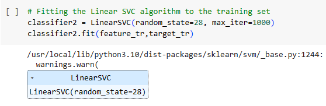

Linear SVMs use a linear decision boundary to separate the data points of different classes.
When the data can be precisely linearly separated, linear SVMs are very suitable.
This means that a single straight line (in 2D) or a hyperplane (in higher dimensions) can entirely divide the data points into their respective classes.
A hyperplane that maximizes the margin between the classes is the decision boundary.

Parameters used for the algorithm are:
random_state : (int, default=None) Controls the pseudo random number generation for shuffling the data for the dual coordinate descent (if dual=True). When dual=False the underlying implementation of LinearSVC is not random and random_state has no effect on the results.
max_iter : (int, default=1000)The maximum number of iterations to be run.